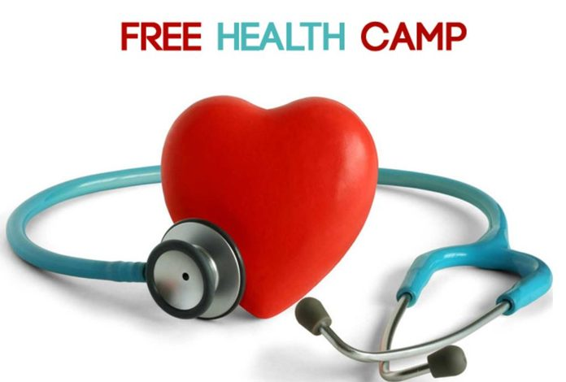
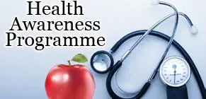
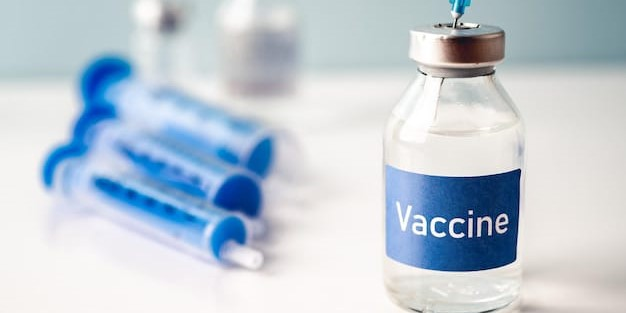

Quick Services
24/7 Emergency
Round-the-clock emergency care.

Online Appointments
Book appointments easily online.
Laboratory Services
Accurate diagnostics.

Pharmacy
All essential medicines available.
To deliver high-quality, patient-centered healthcare services with empathy, integrity, and innovation.
To be the leading healthcare provider recognized for excellence in medical care, research, and community service.
Compassion, Integrity, Excellence, Innovation, Teamwork.
Round-the-clock emergency care.
Book appointments easily online.
Accurate diagnostics.
All essential medicines available.
At HealthConnect, we strongly believe that quality healthcare should reach every individual, regardless of their location or background. Our community programs focus on prevention, awareness, and accessible treatment for all.
HealthConnect regularly organizes free health camps in rural and urban areas to provide basic medical check-ups, blood tests, and health consultations. These camps help in early detection of diseases and promote healthy living among communities.
We conduct awareness drives on important health topics such as diabetes, heart health, maternal care, and mental well-being. Through vaccination programs, we support child and adult immunization to prevent life-threatening diseases.
Our team actively supports underprivileged families by offering subsidized treatments, free medicines, and health education sessions. By working closely with local authorities and volunteers, we aim to build a healthier and stronger society.


